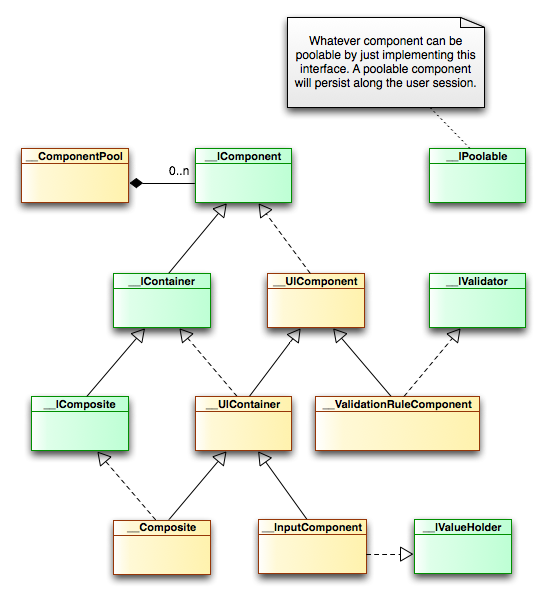

<table cellpadding="10" cellspacing="0" width="100%" border="0"><tr><td valign="top">
<div><a name=""></a><h1>Component types</h1>
  <div class="ref-purpose">What a wonderful components world</div>
 <div class="ref-synopsis"></div>
<h2>Table of Contents</h2>
<ul>

<a href="../../View/Components/tutorial_View.WorkingWithComponents.pkg.html#component_types">Classification</a><br />

&nbsp;&nbsp;&nbsp;<a href="../../View/Components/tutorial_View.WorkingWithComponents.pkg.html#component_types.poolable_components">Poolable components</a><br />

&nbsp;&nbsp;&nbsp;<a href="../../View/Components/tutorial_View.WorkingWithComponents.pkg.html#component_types.container_components">Container components</a><br />

&nbsp;&nbsp;&nbsp;<a href="../../View/Components/tutorial_View.WorkingWithComponents.pkg.html#component_types.valueholders_components">Valueholder components</a><br />

&nbsp;&nbsp;&nbsp;<a href="../../View/Components/tutorial_View.WorkingWithComponents.pkg.html#component_types.container_components">Validator components</a><br />

&nbsp;&nbsp;&nbsp;<a href="../../View/Components/tutorial_View.WorkingWithComponents.pkg.html#component_types.composite_components">Composite components</a><br />
</ul>

 <p></p>
 <span><a name="component_types"></a><h2>Classification</h2><p>Depending on the point of view we can consider the following component types:</p>
   <ul><li>Poolable and non-poolable components</li>
     <li>Container and non-container components</li>
     <li>Valueholder and non-valueholder components</li>
     <li>Validator and non-validator components</li>
     <li>A component can also be a composition from other components</li></ul>
   
   <a name="component_types.poolable_components"></a><h3>Poolable components</h3><p>Poolable components persist along the user session. Internally, the component lives within the component pool, a class designed for that purpose.<br />
     A component implementing the <a href="../../ComponentModel/__IPoolable.html">__IPoolable</a> is recognized by Lion as a poolable component. A non-poolable component just lives during the request, being not available to ajax calls nor the session.</p>
     <p>A component is created the first time the container view is rendered.<br />
     A non-poolable component is created once and again the container view is rendered within different requests (during the same request, each component is created once).<br />
     If the component is poolable, it persists during the user session.</p>
     <p>i.e. A textbox is created the first time the page containing it is shown. After that, it persists during the user session.<br />
     It means that the textbox will remember the latest filled value, even if the user navigates to another page and come back again. In that sense, a component need to be reset or deleted to keep back the blank.</p><br />
   <a name="component_types.container_components"></a><h3>Container components</h3><p>A component can (or not) contain more components. A component which is able to contain other components is a <i>container</i> component.<br />
     A component implementing the <a href="../../ComponentModel/__IContainer.html">__IContainer</a> is recognized by Lion as a container component. A non-container component can not contain other components.</p>
     <p>It's a common practice to, instead of implementing the <a href="../../ComponentModel/__IContainer.html">__IContainer</a>, just extend the <a href="../../ComponentModel/__UIContainer.html">__UIContainer</a> class.</p><br />
   <a name="component_types.valueholders_components"></a><h3>Valueholder components</h3><p>A component can (or not) be a valueholder. A valueholder component is a component containing a value (i.e. the typical form component, such a textbox).<br />
     A component implementing the <a href="../../ComponentModel/__IValueHolder.html">__IValueHolder</a> is recognized by Lion as a valueholder component.</p>
     <p>It's a common practice to, instead of implementing the <a href="../../ComponentModel/__IValueHolder.html">__IValueHolder</a>, just extend the <a href="../../ComponentModel/__InputComponent.html">__InputComponent</a> class.</p><br />
   <a name="component_types.container_components"></a><h3>Validator components</h3><p>A component can (or not) validate other components. A validator is designed commonly in order to validate values contained in valueholders.<br />
     A component implementing the <a href="../../ComponentModel/__IValidator.html">__IValidator</a> is recognized by Lion as a validator component.</p>
     <p>It's a common practice to, instead of implementing the <a href="../../ComponentModel/__IValidator.html">__IValidator</a>, just extend the <a href="../../ComponentModel/__ValidationRuleComponent.html">__ValidationRuleComponent</a> class.</p><br />
   <a name="component_types.composite_components"></a><h3>Composite components</h3><p>A component can also be a composition from other components.<br />
     The most typical implementation is by a view defining the component from others, with defines his own event handler to dispatch events raised from children components.</p>
     <p>From outside the component, all the children components are part of the same component, which means that can't be handled individually.</p>
     <p>It's a common practice to, instead of implementing the __IComposite, just extend the __Composite class.</p><br /></span></div>
      </td></tr></table>